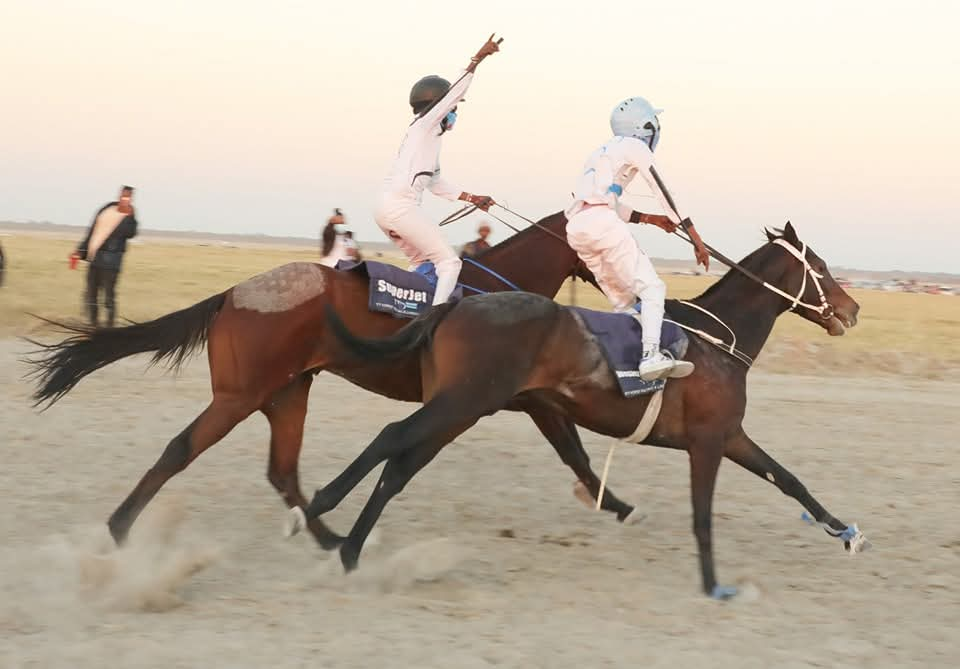

Featured Stories
Kelebeng Urges Creatives to Turn Talent into Sustainable Livelihoods
Government pushes to unlock revenue streams for Botswana's creative industry. Musicians, filmmakers, and digital creators gathered at the Creative Industry Summit to discuss challenges and opportunities.
Read More

Super Jet Soars to Victory at Motokwe Grand Horse Race
The TT Jet July Cup thrilled horse racing fans in Motokwe as Super Jet, owned by Tymon Kelebeng, claimed first place. The event celebrated culture, business, and agriculture in a festival-like atmosphere.
Read More
Cassper Nyovest Headlines Appreciation Party 3.0
Botswana’s ultimate music experience returned with 14 hours of nonstop entertainment, combining hip-hop, Amapiano, Afrobeat, and house music from regional and local artists.
Read More